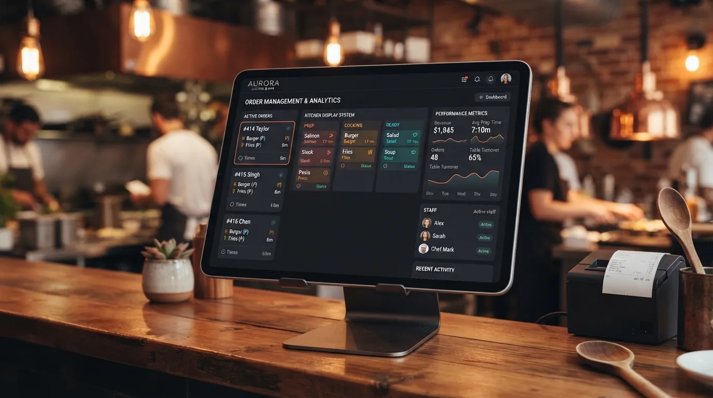
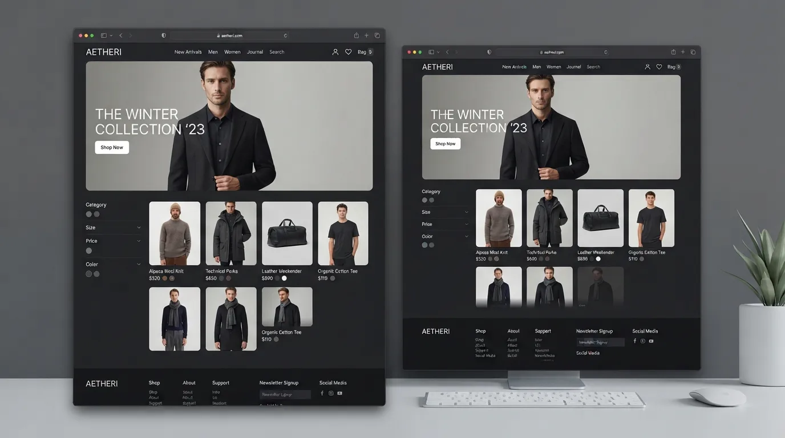

Desarrollo de Soluciones Web
Construcción de aplicaciones web completas, sistemas administrativos y herramientas orientadas a resolver cuellos de botella reales con Python, Django y Flask.
Python • Django • Flask
ALEJOPYTHON & WEB DEVELOPER
Identifico problemas, entiendo necesidades y desarrollo soluciones digitales funcionales. Especializado en backend con Python, APIs estructuradas, modelado de bases de datos e interfaces limpias.
Especialización en ingeniería de software para construir sistemas sólidos, desde la persistencia de datos hasta la interacción final del usuario.
Construcción de aplicaciones web completas, sistemas administrativos y herramientas orientadas a resolver cuellos de botella reales con Python, Django y Flask.
Modelado y persistencia eficiente con PostgreSQL, SQLite y SQLAlchemy. Lógica transaccional estructurada y servicios en la nube.
Experiencia capacitando a docentes y estudiantes en programación, estructurando contenidos didácticos y comunicando conceptos técnicos con total claridad.
Sin niveles porcentuales arbitrarios: herramientas utilizadas activamente en producción.
Estructurados bajo el criterio de ingeniería: Problema → Solución → Desarrollo.

Sistema de GestiónSistema de gestión y pedidos para restaurante.
“De pedidos por WhatsApp a una operación digital centralizada.”
El restaurante tenía un sistema de pedidos basado principalmente en WhatsApp, lo que dificultaba organizar el proceso y trabajar de forma eficiente.
Plataforma web que centraliza la operación en tres áreas: CLIENTE → CAJA → COCINA. El cliente realiza el pedido, en caja se verifica el pago (transferencia o efectivo) y una vez confirmado pasa a cocina para coordinar preparación y despacho.
Herramienta de prospección comercial.
“Convertir búsquedas dispersas de empresas en información estructurada para facilitar la prospección comercial.”
Una persona dedicada a servicios de cargue y descargue necesitaba encontrar empresas potencialmente relacionadas con estos servicios dentro de determinadas zonas.
Herramienta que realiza búsquedas de empresas según zona y criterios mediante Brave Search, organiza los resultados y permite exportarlos a Excel.

E-Commerce • CatálogoExperiencia web para una tienda de productos.
Tienda real que necesitaba una experiencia de compra digital moderna.
Frontend web responsive con catálogo, carrito de compra, favoritos y flujo de confirmación del pedido.